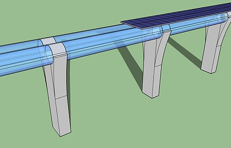

Hyperloop:
 En septembre 2012, Elon Musk réfléchit à un nouveau mode de transport (un TGV subsonique capable de se déplacer à 1 200 km/h en emportant des passagers dans des capsules), dont il souhaite qu'il soit au moins deux fois plus rapide que l'avion et fonctionnant à l'énergie solaire21. Le 12 août 2013, il présente son projet Hyperloop dont il a encouragé la réalisation par d'autres entreprises via un concours organisé par SpaceX22. Depuis ce concours, des start-ups consacrées à la mise en place et au développement de l'Hyperloop sont nées, permettant à Elon Musk de se consacrer à l'automobile et au spatial. En 2015 et 2016, Elon Musk ne dirige plus aucun projet d'Hyperloop, mais sa société SpaceX continue d'organiser des compétitions.